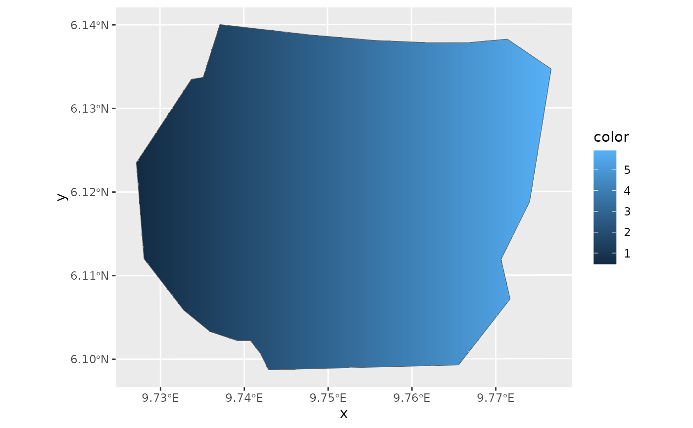

This function extracts the graph of an inla.mesh object and uses geom_line to visualize
the graph's edges. Alternatively, if the color argument is provided, interpolates the colors
across for a set of SpatialPixels covering the mesh area and calls gg.SpatialPixelsDataFrame()
to plot the interpolation.
Requires the ggplot2 package.
Usage
# S3 method for fm_mesh_2d
gg(
data,
color = NULL,
alpha = NULL,
edge.color = "grey",
edge.linewidth = 0.25,
interior = TRUE,
int.color = "blue",
int.linewidth = 0.5,
exterior = TRUE,
ext.color = "black",
ext.linewidth = 1,
crs = NULL,
mask = NULL,
nx = 500,
ny = 500,
...
)
# S3 method for inla.mesh
gg(
data,
color = NULL,
alpha = NULL,
edge.color = "grey",
edge.linewidth = 0.25,
interior = TRUE,
int.color = "blue",
int.linewidth = 0.5,
exterior = TRUE,
ext.color = "black",
ext.linewidth = 1,
crs = NULL,
mask = NULL,
nx = 500,
ny = 500,
...
)Arguments
- data
An
fm_mesh_2dobject.- color
A vector of scalar values to fill the mesh with colors. The length of the vector mus correspond to the number of mesh vertices. The alternative name
colouris also recognised.- alpha
A vector of scalar values setting the alpha value of the colors provided.
- edge.color
Color of the regular mesh edges.
- edge.linewidth
Line width for the regular mesh edges. Default 0.25
- interior
If TRUE, plot the interior boundaries of the mesh.
- int.color
Color used to plot the interior constraint edges.
- int.linewidth
Line width for the interior constraint edges. Default 0.5
- exterior
If TRUE, plot the exterior boundaries of the mesh.
- ext.color
Color used to plot the exterior boundary edges.
- ext.linewidth
Line width for the exterior boundary edges. Default 1
- crs
A CRS object supported by
fm_transform()defining the coordinate system to project the mesh to before plotting.- mask
A SpatialPolygon defining the region that is plotted.
- nx
Number of pixels in x direction (when plotting using the color parameter).
- ny
Number of pixels in y direction (when plotting using the color parameter).
- ...
ignored arguments (S3 generic compatibility).
Value
geom_line return values or, if the color argument is used, the
values of gg.SpatialPixelsDataFrame().
See also
Other geomes for meshes:
gg(),
gg.fm_mesh_1d(),
gm()
Examples
# \donttest{
if (require(fmesher, quietly = TRUE) &&
require(ggplot2, quietly = TRUE)) {
# Load Gorilla data
data("gorillas", package = "inlabru")
# Plot mesh using default edge colors
ggplot() +
gg(gorillas$mesh)
# Don't show interior and exterior boundaries
ggplot() +
gg(gorillas$mesh, interior = FALSE, exterior = FALSE)
# Change the edge colors
ggplot() +
gg(gorillas$mesh,
edge.color = "green",
int.color = "black",
ext.color = "blue"
)
# Use the x-coordinate of the vertices to colorize the triangles and
# mask the plotted area by the survey boundary, i.e. only plot the inside
xcoord <- gorillas$mesh$loc[, 1]
ggplot() +
gg(gorillas$mesh, color = (xcoord - 580), mask = gorillas$boundary) +
gg(gorillas$boundary)
}

# }